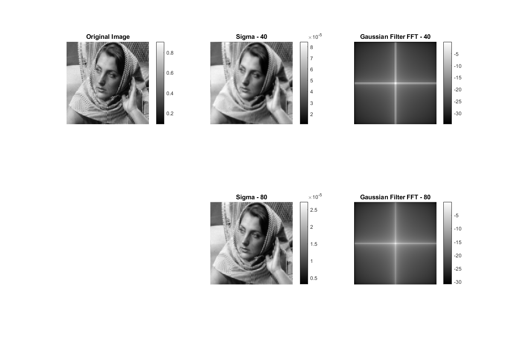

Contents
MyMainScript
clear all; close all; clc; tic;
Low Pass Cutoff Filter
img = double(imread('../data/barbara256.png'))/255; figure('Position', [100 100 1200 1200]); subplot(2,3,1); imshow(img, [min(min(img)), max(max(img))]); title('Original Image'); colorbar; cutoff = 40; [filtered_img, lp_filter] = cutoff_filter(img, cutoff); subplot(2,3,2); imshow(filtered_img, [min(min(filtered_img)), max(max(filtered_img))]); title('Cutoff - 40'); colorbar; lp_filt_fft_img_logabs = log(abs(fftshift(fft2(lp_filter)))); subplot(2,3,3); imshow(lp_filt_fft_img_logabs, [min(min(lp_filt_fft_img_logabs)), ... max(max(lp_filt_fft_img_logabs))]); title('Low Pass Filter FFT - 40') colorbar; cutoff = 80; [filtered_img, lp_filter] = cutoff_filter(img, cutoff); subplot(2,3,5); imshow(filtered_img, [min(min(filtered_img)), max(max(filtered_img))]); title('Cutoff - 80'); colorbar; lp_filt_fft_img_logabs = log(abs(fftshift(fft2(lp_filter)))); subplot(2,3,6); imshow(lp_filt_fft_img_logabs, [min(min(lp_filt_fft_img_logabs)), ... max(max(lp_filt_fft_img_logabs))]); title('Low Pass Filter FFT - 80') colorbar;

Low Pass Gaussian Filter
figure('Position', [100 100 1200 1200]); subplot(2,3,1); imshow(img, [min(min(img)), max(max(img))]); title('Original Image'); colorbar; sigma = 40; filtered_img = gaussian_filter(img, sigma); subplot(2,3,2); imshow(filtered_img, [min(min(filtered_img)), max(max(filtered_img))]); title('Sigma - 40'); colorbar; gaussian_filter_img = fspecial('gaussian', size(img), sigma); gauss_filt_fft_img_logabs = log(abs(fftshift(fft2(gaussian_filter_img)))); subplot(2,3,3); imshow(gauss_filt_fft_img_logabs, [min(min(gauss_filt_fft_img_logabs)), ... max(max(gauss_filt_fft_img_logabs))]); title('Gaussian Filter FFT - 40'); colorbar; sigma = 80; filtered_img = gaussian_filter(img, sigma); subplot(2,3,5); imshow(filtered_img, [min(min(filtered_img)), max(max(filtered_img))]); title('Sigma - 80'); colorbar; gaussian_filter_img = fspecial('gaussian', size(img), sigma); gauss_filt_fft_img_logabs = log(abs(fftshift(fft2(gaussian_filter_img)))); subplot(2,3,6); imshow(gauss_filt_fft_img_logabs, [min(min(gauss_filt_fft_img_logabs)), ... max(max(gauss_filt_fft_img_logabs))]); title('Gaussian Filter FFT - 80'); colorbar;
Comments
Using the low pass cutoff filter results in the introduction of ringing phenomenon which can be seen especially on the left side of barbara where there is a smooth surface. On the other hand, gaussian low pass filtering doesn't result in such ringing. This is due to the fact that the sharp changes in the cutoff filter result in many stray frequencies that corrupt the original image.
toc;
Elapsed time is 8.776007 seconds.